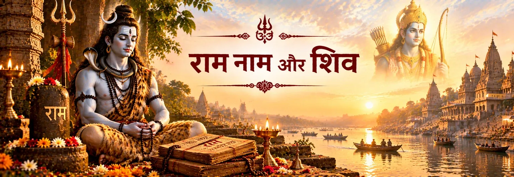

राम-नाम को आध्यात्मिक रूप से शक्तिशाली माना गया है
बालकाण्ड का यह प्रसंग राम-नाम की महिमा का गान करते हुए उसे भक्ति-साधना के केंद्र में रखता है।

भक्ति और प्रतीक
रामचरितमानस में राम और शिव का संबंध केवल पूजा की कथाओं से नहीं, बल्कि राम-नाम की पवित्र शक्ति से भी व्यक्त होता है। तुलसीदास राम-नाम को ऐसी आध्यात्मिक सत्ता के रूप में प्रस्तुत करते हैं जिसे शिव जानते, जपते और उपदेश देते हैं।
सबसे स्पष्ट कथन बालकाण्ड में मिलता है, जहाँ राम-नाम को महेश्वर और काशी से जुड़े महान मंत्र के रूप में प्रस्तुत किया गया है। यह प्रसंग नाम को मुक्ति से और उसकी आध्यात्मिक शक्ति की शिव द्वारा स्वीकृति से जोड़ता है।
रामचरितमानस · बालकाण्ड
तुलसीदास राम-नाम की स्तुति ऐसे पवित्र विस्तार से आरम्भ करते हैं जिसमें दिव्य नाम और रूपों का व्यापक संबंध दिखाई देता है।
बालकाण्ड का यह प्रसंग राम-नाम की महिमा का गान करते हुए उसे भक्ति-साधना के केंद्र में रखता है।
ग्रंथ महेश्वर को राम-नाम के जप से सीधे जोड़ता है और शिव को नाम की शक्ति के महत्त्वपूर्ण साक्षी के रूप में प्रस्तुत करता है।
बालकाण्ड की यह शिक्षा शिव, काशी और राम-नाम की मुक्तिदायक शक्ति को एक ही भक्तिपरक ढाँचे में जोड़ती है।
उसी प्रसंग में कहा गया है कि शिव नाम की शक्ति को भली-भाँति जानते हैं और कालकूट विष की कथा को उसकी भक्तिपरक व्याख्या में जोड़ा गया है।
नाम, रूप और भक्ति
यह शिक्षा राम और शिव के भेद को मिटाती नहीं; बल्कि पवित्र नाम के माध्यम से दोनों के बीच एक भक्तिपरक मिलन-बिंदु प्रस्तुत करती है।
राम-नाम को ऐसा स्मरणीय और जपनीय माना गया है जिससे धार्मिक विचार साधना के माध्यम से सहज हो जाते हैं।
शिव को राम-नाम जपते हुए दिखाकर ग्रंथ ऐसी भक्ति की छवि देता है जो संकीर्ण संप्रदायगत सीमाओं से परे जाती है।
इस प्रसंग को ऐसी भक्तिपरक स्वीकृति के रूप में पढ़ा जा सकता है जिसमें राम और शिव—दोनों के प्रति श्रद्धा साथ रह सकती है।
भक्त के लिए यह शिक्षा केवल बौद्धिक चर्चा नहीं रहती; यह जप, स्मरण और पवित्र नाम के प्रति श्रद्धा की ओर संकेत करती है।
शिव, पार्वती और काशी
बालकाण्ड में आगे शिव पार्वती को बताते हैं कि राम परमात्मा हैं और उनका नाम मुक्तिदायक शक्ति रखता है।
पार्वती के साथ संवाद में शिव कहते हैं कि काशी में किसी प्राणी को मृत्यु के निकट देखकर वे राम-नाम की शक्ति से उसके शोक को दूर करते हैं। इसके बाद वे राम को अपना प्रभु और सभी हृदयों में स्थित अंतर्यामी बताते हैं।
रामचरितमानस के भीतर यह एक महत्वपूर्ण धार्मिक कथन है: राम की भक्ति से शिव का महत्त्व कम नहीं होता। इसके विपरीत, शिव की अपनी ज्ञान-दृष्टि ही पार्वती के सामने राम की आध्यात्मिक महत्ता को स्पष्ट करती है।
Ramcharitmanas · Bala Kanda 28·Bala Kanda 11 · Glory of the Name
भक्तिपरक दृष्टि
नाम स्मरण, मुक्ति और शिव-राम के प्रेमपूर्ण संबंध के बीच एक मिलन-बिंदु बन जाता है।
भक्त के लिए राम-नाम केवल भगवान राम का नाम भर नहीं है। इस शिक्षा में वह स्मरण का साधन बन जाता है—ऐसा नाम जिसे बोला, जपा और हृदय में धारण किया जा सकता है। शिव की भूमिका इस स्मरण को शैव पवित्र कल्पना में भी एक विशेष स्थान देती है।
यह शिक्षा यह समझने में भी सहायता करती है कि अलग-अलग हिंदू भक्तिपरंपराओं में राम–शिव भक्ति साथ क्यों दिखाई देती है। रामचरितमानस राम का सम्मान करने के लिए शिव को छोड़ने की बात नहीं करता; वह स्वयं शिव को राम-नाम की पवित्र धर्मदृष्टि के भीतर रखता है।
स्रोत और आगे का अध्ययन
मुख्य पाठ-आधार रामचरितमानस है, विशेषकर बालकाण्ड में राम-नाम की महिमा और शिव-पार्वती संवाद वाले प्रसंग। यहाँ विशिष्ट काशी-उपदेश के लिए वाल्मीकि रामायण को स्रोत नहीं बनाया गया है।
Bala Kanda 11 · Glory of the Name·Bala Kanda · Further Name Teaching·Bala Kanda 28 · Shiva and Parvati·Complete Bala Kanda
रामचरितमानस की दृष्टि में पवित्र नाम एक सेतु बन जाता है: शिव राम-नाम का जप करते हैं, उसकी मुक्तिदायक शक्ति बताते हैं और पार्वती को गहरी समझ की ओर ले जाते हैं। यह प्रसंग भक्त को अलग-अलग दिव्य रूपों की सुंदरता मिटाए बिना एकत्व का अनुभव करने का निमंत्रण देता है।
भक्तों के सामान्य प्रश्न
हाँ। बालकाण्ड 11 में महेश्वर द्वारा जपे जाने वाले महान मंत्र का वर्णन है और राम-नाम की शक्ति की स्पष्ट स्तुति की गई है।
रामचरितमानस की धार्मिक दृष्टि में काशी में राम-नाम की मुक्तिदायक शक्ति से शिव का संबंध बताया गया है, विशेषकर उस प्रसंग में जहाँ वे पार्वती से वहाँ मृत्यु को प्राप्त होने वालों के विषय में बोलते हैं।
यह पृष्ठ रामचरितमानस की भक्तिपरक धर्मदृष्टि को प्रस्तुत करता है, न कि हर हिंदू परंपरा के लिए एक सार्वभौमिक सिद्धांत घोषित करता है। ग्रंथ गहरे एकत्व की बात करते हुए राम और शिव की विशिष्ट भक्तिपरक पहचान बनाए रखता है।
यहाँ चर्चा किया गया राम-नाम–काशी उपदेश रामचरितमानस, तुलसीदास की बाद की भक्तिपरक रामकथा, से लिया गया है। अलग पाठ-साक्ष्य के बिना इसे वाल्मीकि रामायण को नहीं देना चाहिए।